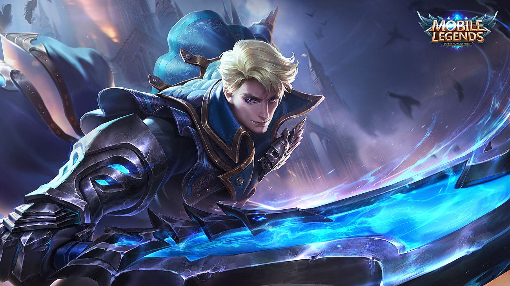

Alucard - The Demon Hunter

Role : Fighter/Assassin
Speciality : Chase/Damage
Lane : Jungle/Exp
Damage type : Physical Damage
" Dingin, tetapi tidak kejam 🥶🥶🥶 "
Background:
The last great war is a glorious memory for the Moniyans. The powerful Light's Order, together with the Imperial Border Guards, wiped out the demonic strongholds at the Moniyan and the Barren Lands pass, driving the fiends back to the hinterlands of the Forsaken Wastes. But for young Alucard, the war was nothing but a terrible memory of pain and misery. His father's second regiment suffered heavy losses due to a rash lone advance. Alucard's father disappeared in the battle and was later declared dead by the Light's Order.
As they had disobeyed orders, the second regiment was not honored and praised for their sacrifice but labeled "disobedient" and criticized for their lack of discipline. This was a huge blow to Alucard, who had always regarded his father as a hero and role model. Facing shame and ridicule everywhere he went, the flames of revenge burned within his chest, and he became determined to bring honor to his father's name and eliminate all the demons in the Land of Dawn. And so, he left his hometown and journeyed to the ancient and mysterious Monastery of Light. As the orphaned son of a dead soldier, Alucard was soon accepted into the Monastery of Light.
Biodata:
- Race: Human
- Height: 182 CM
- Age: 24
- Origin: Moniyan Empire
-
Affiliaton:
- Balmond (Enemy)
- Miya (Crush)